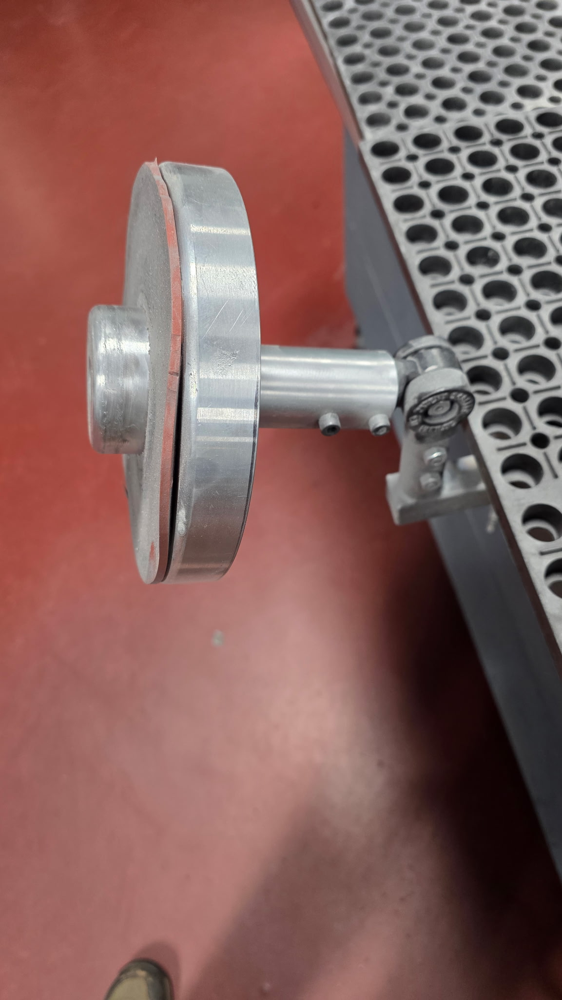
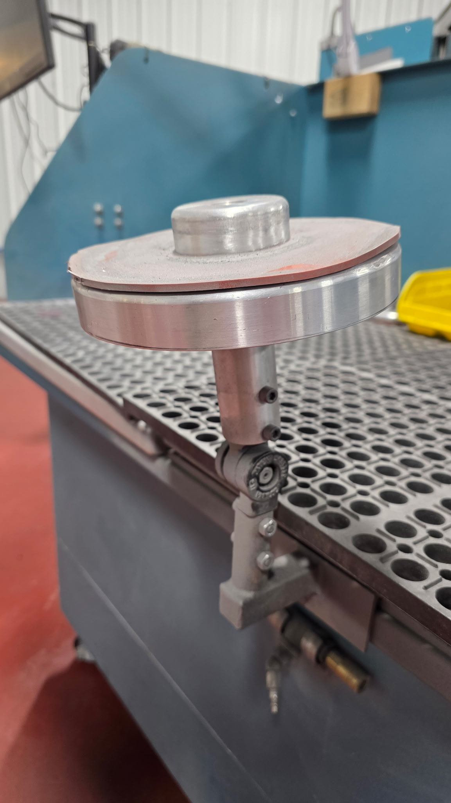
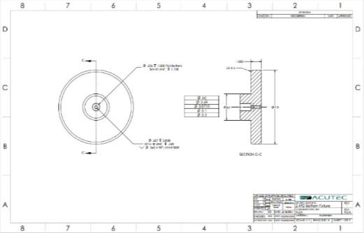

Explore my projects at
General Dynamics Land Systems

One Piece Flow Implementation
Industrial Engineering Intern @ GDLS

Skills Applied
Solidworks
GD&T
Welding
- Conceptualized and designed the fixture in SolidWorks for 180° rotation and full horizontal load support.
- Selected appropriate hinge and all necessary components to ensure smooth rotation, strength, and stability.
- Engineered the fixture to be sturdy enough to hold 20 lbs while maintaining rotational freedom.
- Custom-fabricated components and welded the fixture to meet design specifications.
- Collaborated with machinists to fabricate custom components and assemble the fixture according to design specifications.
Inspiration and Objective:
Process and Results:


